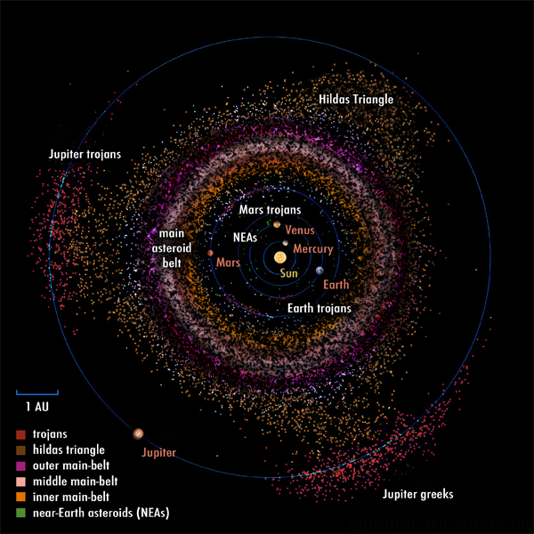
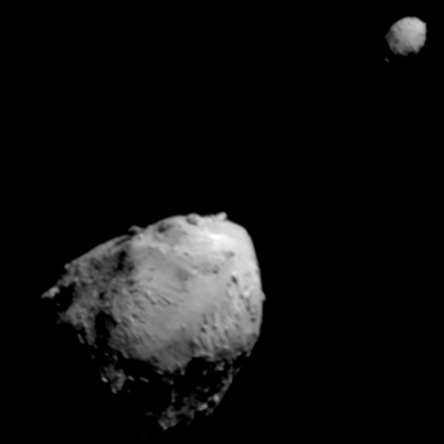
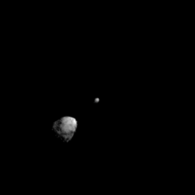

Location of asteroids in the Solar System. Red - trojans; brown - Hildas; pink, beige, orange - asteroid belt; green - near-Earth asteroids. Source
An asteroid is a minor planet that is within, or shares the orbits of Jupiter.
Asteroids consist of materials like carbonates, organic material, silicates, and metals, and have less ice than minor planets beyond Jupiter, like centaurs, or trans-neptunian objects.
The biggest concentration of asteroids is the asteroid belt between Mars and Jupiter, where the biggest asteroids like Ceres, Vesta, Pallas, and Hygiea are located.
Ohter populations of asteroids are Jupiter trojans that were drawn by the planet's strong gravity into the stable L4 and L5 points, and the Hilda triangle, an intermediate region of the outer belt.
There are also many scattered asteroids that cross, or approach the orbits of the inner planets like Earth and Mars.
The near-Earth asteroids are of greater interest because many of them are potentially hazardous and could strike Earth.
Multiple missions were sent to asteroids for a number of reasons, including more general missions to study them from a distance, sample returns, and even asteroid deflection tests.
In 1596, Johannes Kepler assumed that there must be a planet between Mars and Jupiter, due to the gap between the planets.
Three centuries later, in 1801, one object was discovered in the search for the missing planet.
It was named Ceres after the Roman goddess of harvest.
Soon, other objects were discovered - Pallas, Juno, Vesta, and Astraea.
William Herschel suggested the term "asteroid" (star-like), since their apparent sizes were smaller than those of stars.
First asteroid to be discovered outside the main belt is the Mars crosser Aethra, which was lost after 22 days of observation, eventually getting rediscovered in 1922.
In 1875, the asteroid Hilda was discovered, being part of the Hilda asteroids.
Similarly, the asteroid Thule was discovered in 1888, which is even further away from the asteroid belt and closer to Jupiter.
These two are often considered part of the outer main belt, but their respective groups are unique, with the Hildas forming a triangle with points around Jupiter's L3, 4, and 5 points.
Until then, asteroid discoveries were significantly cumbersome for astronomers, some even calling them "vermin of the skies" for getting away into more significant observations.
The best visual discoverer at the time was Johann Palisa, who discovered 122 asteroids during his lifetime.
He worked closely with Max Wolf, who pioneered the use of photography to discover asteroids since 1891.
He alone discovered 248 asteroids.
The first near-Earth asteroid to be discovered was Eros in 1898.
Achiles was the first trojan of Jupiter to be discovered in 1906 by Wolf himself.
New asteroids were discovered at a much higher rate, requiring more complex provisional naming schemes before getting approved by the Minor Planet Center.
Eventually, many much smaller asteroids were being discovered with greater technology.
This has proven crucial in the cataloguing of near-Earth asteroids that are potentially hazardous and could strike Earth.
DART, a mission by NASA, was the first to change the orbit of an asteroid, albeit a small one (Didymos's moon Dimorphos.)
A potential use of asteroids, particularly metal-rich ones, is asteroid mining.
The NASA mission Psyche is on its way to the asteroid of the same name to study its composition and formation.
Asteroids can be categorized in several ways.
According to color, albedo and spectral shape, asteroids can be classified into three broad classes - C (carbonaceous), S (stony/silicaceous), and X (other).
This is known as the Tholen classification, and is one of the most common spectral classifications.
These three also include several smaller ones, like the metallic M class (part of X-class).

Ceres, the largest asteroid in the asteroid belt
Another way to classify asteroids is by asteroid groups.
Main article: Asteroid belt
The asteroid belt is a region in the Solar System, located roughly between the orbits of the planets Jupiter and Mars.
It contains the highest concentration of asteroids and is roughly divided into three subbelts.
The inner main belt asteroids are located within the Kirkwood gap that corresponds with 3:1 orbital resonance with Jupiter.
The largest members are Vesta, Fortuna, and Iris.
The intermediate main belt is located between the gaps corresponding to 3:1 and 5:2 resonances.
The largest members are Ceres, Pallas, and Eunomia.
The outer main belt is the region outside the 5:2 orbital resonance.
The largest members are Hygiea, Interamnia, and Europa.
There are also a few groups within the belt that are resonant with Jupiter, notably the Alinda and Griqua groups.
Main article: Trojan
Trojans are minor planets that orbit around the L4 and L5 Lagrange points of planets.
Trojan populations that are considered asteroids extend up to Jupiter.
The only planet not to have any known trojans is Mercury.
Jupiter features the highest population of trojans.
They are named after characters from Greek mythology that have fought in the Trojan war, hence the name.
The largest L4 trojans have Greek names, while the L5 have Trojan names.
Exceptions are Hektor (a Trojan prince) and Patroclus (a Greek hero), which are part of their respective enemy camp, as they were named before the convention.
Hektor is the biggest of the trojan asteroids and is the 12th biggest overall.
The Lucy mission by NASA is expected to visit several Trojan asteroids, starting with Eurybates in 2027.
Other planets have much less trojans, since they do not have a gravitational field as strong as Jupiter, or are not close to the asteroid belt.
Of the inner planets, Venus has 1 known trojan, Earth has 2, and Mars has 15.

Eros, a well-studied near-Earth asteroid
Main article: Near-Earth asteroid
Near-Earth asteroids are a group of several families of asteroids tha orbit close to Earth.
Due to their proximity to Earth, they are of significant interest and are easier to detect than other small families near other planets.
There are four distinct groups.
The Amor group are NEAs that orbit outside the orbits of Earth.
The largest of the Amors and largest NEA is Ganymed.
The Apollo group comprises NEAs that cross the Earth orbit, but have a semi-majoral axis greater than 1 AU.
They are the most numerous of the four groups.
Largest of the Apollos is the asteroid Sisyphus.
The Aten group includes NEAs that cross the Earth orbit, but have a semi-majoral axis of less than 1 AU.
The Atira group is the smallest group of NEAs, and includes those that orbit within Earth's.
Several asteroids that have very close orbits to Earth are classified as potentially hazardous.
For that reason, NASA launched the mission DART to test asteroid deflection, successfully changing the orbits of Didymos's moon Dimorphos.
Other agencies are also considering similar missions.
The Hildas are a group of asteroids outside the main belt and coincide with a 3:2 orbital resonance with Jupiter.
This resonance is the reason that these asteroids collectively form a triangle around the Sun.
Hilda is the biggest such asteroid.
Vulcanoids are a theoreticized group of satellites that orbit closer to the Sun than Mercury.
They are named after the planet that was proposed by Urbain Le Verrier, who predicted the existence of Neptune.
The planet Vulcan's existence was debunked by Einstein's theory of relativity.
The main reason why none have been discovered is because they are very small and orbit too close to the Sun, which makes them hard to detect.
ꞌAylóꞌchaxnim asteroids are a group of asteroids within Venus's orbit.
So far, ꞌAylóꞌchaxnim is the only known asteroid of this family.
The same problems of detecting Vulcanoids applies here.
There are several groups of orbit-crossing asteroids apart from Earth crossers (Apollo and Aten groups).
Many asteroids are part of several of those groups, as they cross the orbits of multiple planets.
Mars crossers are asteroids that have orbits crossing those of Mars, but are not necessarily NEAs.
Every Venus and Mercury crosser is also considered a near-Earth asteroid.
A remarkable example is Phaeton, which has the smallest known perihelion of a named asteroid.
It is a member of the Apollo group of NEAs and is a potentially-hazardous asteroid, as well as a Mercury, Venus, and Mars crosser.
2006 HY51 is another extreme example, which has the smallest known perihelion of a numbered minor planet, and falls into all the same groups as Phaeton, as well as being a Jupiter crosser.
Thule asteroids are a small group of asteroids that orbit closer to Jupiter, outside the Hildas.
They are in a 4:3 resonance with Jupiter.


Didymos with its moon Dimorphos and a replay of the impact
The first spacecraft to make close flybys of asteroids was the Galileo mission to Jupiter, which encountered the asteroids Gaspra and Ida in 1991 and 1993 respectively.
Other asteroids that were visited by spacecraft on their way to other objects include Annefrank by Stardust, Braille by Deep Space 1, Lutetia and Šteins by Rosetta, and Toutatis by Chang'e 2,
The first dedicated asteroid mission was NEAR Shoemaker, launched in 1996, which first passed by the main-belt Mathilde, after which it entered orbit around near-Earth asteroid Eros.
After one year in orbit, the spacecraft landed on the surface and transmited data for two weeks.
The spacecraft Dawn was another general asteroid mission, launched in 2007, and sent to visit the two largest asteroids - Ceres and Vesta.
It orbited Vesta for one year, after which it left for Ceres.
The orbiter operated there for three years before losing contact, still orbiting to this day.
Hayabusa, launched by JAXA in 2003, was the first sample return mission.
It visited the small near-Eart asteroid Itokawa, after which it returned a capsule of regolith back to Earth.
A follow-up mission, Hayabusa2, visited another asteroid - Ryugu.
The samples returned contained not just silicate rocks, water ice, and simple organics, but also more complex organic compounds like uracil and vitamin B3.
The spacecraft's mission has been extended and will now flyby two more asteroids.
Meanwhile, the NASA mission OSIRIS-REx mapped extensively the potentially-hazardous asteroid Bennu after which it landed to collect regolith.
The returned sample showed the presence of amino acids and all nucleobases for DNA and RNA.
The next target of the mission (renamed OSIRIX-APEX for the extended mission) will next target another hazardous asteroid, but without returning samples - Apophis.
DART was launched in 2021 with one purpose - impacting into an asteroid.
It reached the small near-Earth asteroid Didymos and its even smaller moon Dimorphos.
Dimorphos measures at around 151 m in diameter, making it a perfect test target for the first ever asteroid deflection test.
The impact reduced the orbital period with 33 minutes and ejected a million kilograms of material.
Hera, a follow-up mission by ESA is on its way to the system to further investigate the system.


Psyche, seen by the VLT (Source) and an artist impression by NASA
After Hayabusa2#'s visit of Torifune and Hera's visit of the Didymos system, the next mission to an asteroid is Tianwen-2, launched in 2025.
This will be the fifth sample return of an asteroid and the second asteroid visited by CNSA, the target being Kamoʻoalewa.
The spacecraft will then return a capsule and go for its second target, the asteroid 311P/PanSTARRS.
CNSA is also proposing a deflection test mission this decade.
Lucy is a NASA mission that will be the first to visit the Jupiter trojans.
On its way to the system, the spacecraft has already encountered the main-belt asteroids Dinkinesh and Donaldjohanson.
When it reaches the Greek camp, it will make flybys of four asteroids, and then go to the Trojan camp, making a flyby of the binary Patroclus-Menoetius.
Another NASA mission on its way to an asteroid is Psyche.
It will enter orbit around the asteroid of the same name for 20 months.
The reason that Psyche was selected for the mission is due to its metallic composition.
While Lutetia, a previously visited asteroid, is an M-type spectra, data suggests that Psyche is much richer in metals.
Psyche will see if the asteroid is an exposed metal core of a protoplanet, or a stone with regolith consisting of metal-rich compounds.
JAXA is sending a tech demonstration spacecraft DESTINY+ to the asteroid Phaethon, parent body of the Geminids meteor shower.
It will collect samples from the dust it leaves behind.
Another upcoming mission is MBR Explorer, planned by the UAE Space Agency.
It will fly by six asteroids before landing on a seventh, Justitia, examining the prospects of asteroid mining.
Justitia is an unusually red asteroid, suggesting it is tholin-rich and has likely migrated from the outer Solar System.
External links
{% include catminor-planets.html %}
{% include catlargest-asteroids.html %}
{kind=link}
{kind=link}